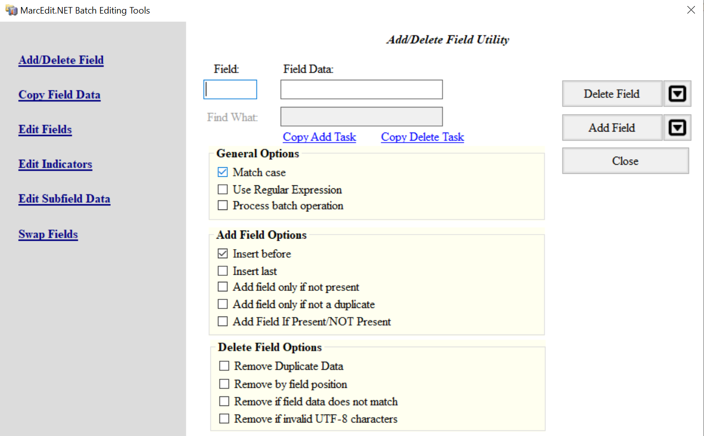
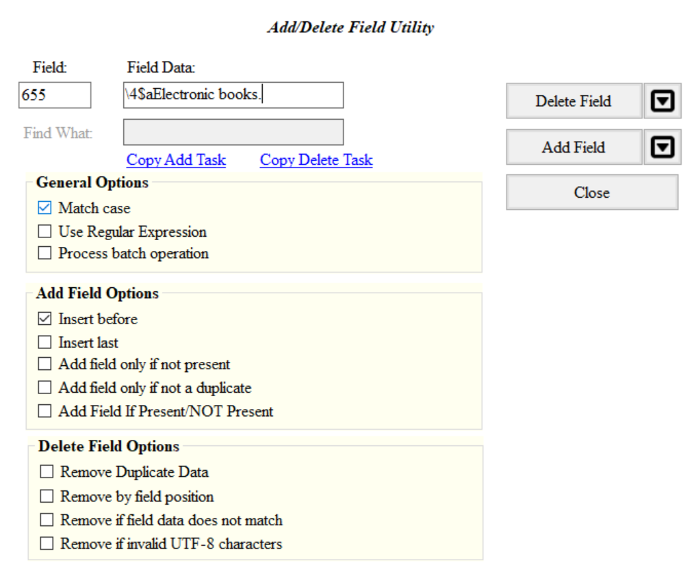
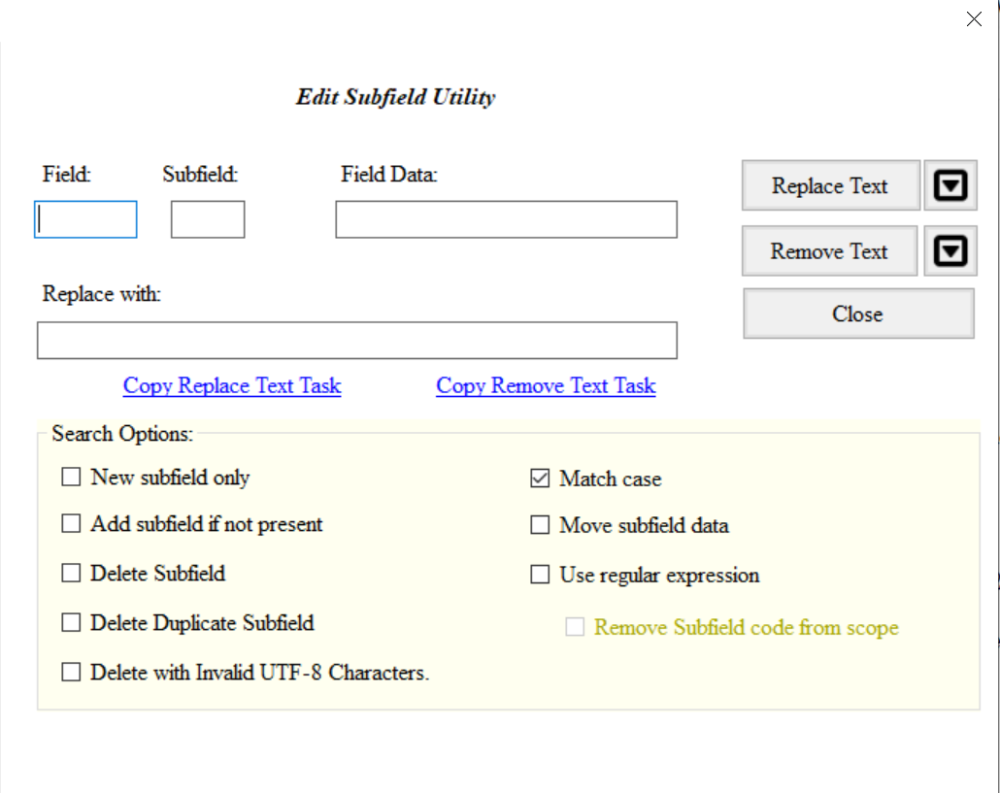
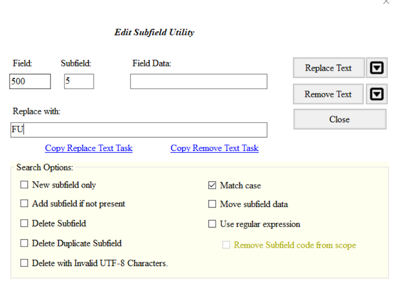
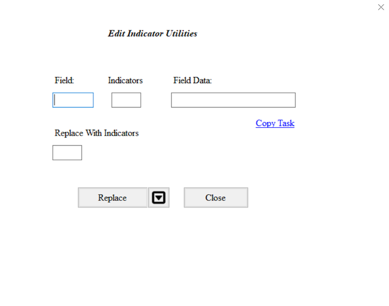
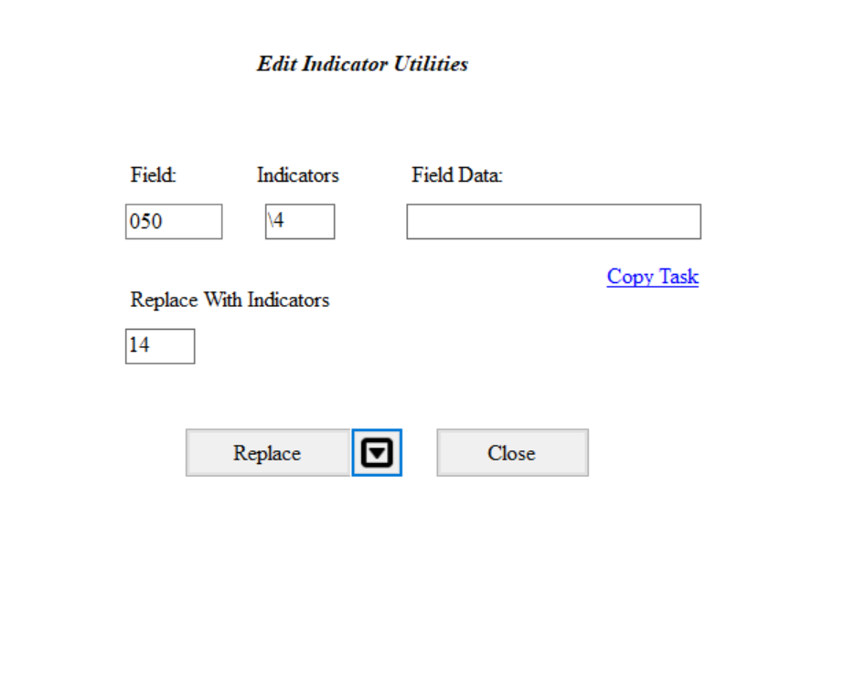
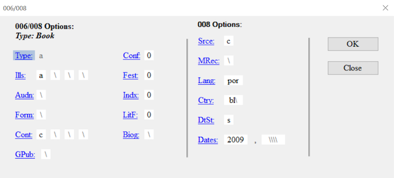

Manipulating MARC data basics
Last updated on 2026-07-09 | Edit this page
Overview
Questions
- How can MARC data be manipulated?
- How can fields, subfields, and/or indicators be added, changed, or removed?
- How can fixed fields be manipulated?
- What is the difference between save and compile?
Objectives
- Understand and identify use cases for the MarcEditor’s find, find all, and replace tools
- Understand how to add, update, and remove fields, subfields, indicators, and fixed fields using the MarcEditor’s tools suite
- Explain the difference between saving and compiling a MARC data file in the MarcEditor
- Save and compile a MARC data file in the MarcEditor
Manipulating MARC data
We have seen how we can manually and individually edit records in the MarcEditor, however, MarcEdit provides a number of more powerful ways to manipulate our MARC data. Fields, subfields, and indicators can be added, removed, or changed. Fixed fields can be corrected. Fields and subfields specific to RDA can be added while AACR2 conventions are removed. It is possible to work with a subset of MARC data and then incorporate those changes into the original whole MARC data set. The variations sometimes seem endless and give more weight to the nickname of MarcEdit, the Swiss army knife of MARC data.
Find, Find All, and Replace
As we saw in lesson 5, MarcEdit’s Find/Find All functionality supports reviewing your data. We can pair this functionality with Replace to start manipulating our data in bulk.
Replace: Replace works alongside Find/Find all. You have the option to Replace just those matching strings on the page or Replace all where the replace occurs on all pages in all records.
Find Text/Replace Text and Find All Results Popup Windows
The popup window for the Find Text/Replace Text function and the secondary popup window for your Find All search results will not close automatically. You will need to close these windows when you are done performing your find/replace actions.
Use Find and Find All to review the MARC field 856
- Go to Edit->Find (or CTRL+F).
- In the search box in the new window, type in
856. - Click Find.
- What results do you see?
- Close that window.
- Go to Edit->Find (or CTRL+F).
- In the search box in the new window, type in
=856. - Click Find All.
- Our results show a list of 282 instances of
=856. Note that the first results include an institution specific proxy=856 40\$3Full text:\$uhttps://proxy.ufl.edu?url=. We will need to remove this proxy string if we want to use these records in a different institutional catalog.
Remove a proxy from the MARC field 856
- Find those instances of
https://proxy.ufl.edu?url=in the record set. - Use Replace/Replace All to remove proxy string.
- Click Edit->Replace.
- In the search box for Find, type in
\$uhttps://proxy.ufl.edu?url=. - In the search box for Replace, type in
\$u. - Click Replace All.
Find and Replace
Remember to always verify the search results of the Find or Find All
and profile your data before making changes. Find or Find all will
search for the exact phrase or string that you put into the search box
either on that page (Find) or in every record (Find all). In the example
above, if your records contain MARC fields 856 with
different \$u data (for example:
=856 40\$3Online Access:\$uhttps://proxy.ucla.edu?url=) the
replace above will not remove the proxy from the 856
fields. You will need to do another replace.
Add/Delete a MARC field
To add or delete a MARC field, go to Tools in the upper menu in the MarcEditor and select Add/Delete Field. This will open a new Batch Editing Tools window. The Add/Delete Field functions are on the same menu level and you will need to select the action of either add or delete using the buttons on the right-hand side.
In the top middle section of the window, there are two data entry fields: Field and Field Data. Enter the MARC field number you want to add or delete in the Field dialog box. Then enter the indicators, subfields, and data in Field Data dialog box. Remember to include the dollar sign to indicate a subfield.


To add the field, click the Add Field button and to delete any matching fields, click the Delete Field button.
For both the Add Field and Delete Field functions there are a number of different options that can be applied to control the updates.
The options to Add a Field include: - Inserting the new field before
or after existing fields of the same type. For example, if you are
adding a new 500 note field, you can at it before or after
the existing 500 fields. - Limiting the addition of the new
field to records where the field is not present or where the field and
field contents are not duplicated. - Limiting the addition of the new
field based on the presence of other criteria found in other MARC
fields. For example, you can add a MARC field
655 \4$aElectronic books to only those records that are
eBooks based on the data in the LDR or
008.
The options to Delete a Field include: - Removing fields that
duplicate the existing content. - Removing MARC fields based on field
position. - Removing MARC fields that do not match what is entered in
the Field Data. For example, to ensure that only the field
655 \4$aElectronic books. is present in the MARC data, the
option Remove if field data does not match can be selected. - Removing
invalid UTF-8 MARC fields.
Add and then delete a MARC field
- Add a
655for electronic books with first indicators blank and second indicator4to the MARC data. - Delete that
655that you just added.
- Go to Tools in the upper menu in the MarcEditor.
- Select Add/Delete Field (F7).
- In the Field box enter
655, in the Field Data box enter\4$aElectronic books. - Click Add Field. You can also preview this change by clicking on the arrow on the right of Add Field and selecting Preview in the 7.5 version of MarcEdit
- Check your MARC data. Was this MARC field added?
- To delete this field, go back to Tools and select Add/Delete Field (F7).
- In the Field box enter
655. - In the Field Data box enter
\4$aElectronic books. - Click on the Delete Field button. You can also preview this change by clicking on the arrow on the right side and selecting Preview in the 7.5 version of MarcEdit.
Metacharacter syntax in the MarcEditor
Within the batch editing tools, MarcEdit uses the X metacharacter to
represent a numeric range for selecting and editing fields. For example,
if you enter 24X, that edit will act on fields 240-249; if
you enter 5XX, that edit will act on fields 500-599.
Delete a range of MARC fields that begin with a number
- Verify your data contains multiple
9XXfields. - Delete all
9XXfields.
- Verify your file has multiple
9XXfields by using the Field Count report (Reports → Field Count), or by using Find (Edit → Find=9→ Find All). - Go to Tools in the upper menu in the MarcEditor.
- Select Add/Delete Field (F7).
- In the Field box add
9XX. - Click on the Delete Field button. You can also preview this change by clicking on the arrow on the right side and selecting Preview in the 7.5 version of MarcEdit.
Add, Delete, or Change information for a subfield in a MARC field
To edit subfield data within a given field, go to Tools and select Edit Subfield Data. A new Batch Editing Tools window will open (notice that this is the same window that opened for Add/Delete a field, you can also navigate between the MarcEdit Batch Editing Tools using the labels on the left-hand side of the window). From here you can add a new subfield, delete a subfield, or replace text in a subfield. Set your desired subfield edit conditions by selecting the appropriate option(s) from the Search Options list.
To add a subfield, enter the MARC field and then the subfield. The text you would like to add in that subfield is entered in Replace With box. Select New subfield only from the Search Options below and then click Replace Text. Even though you are adding a subfield, you still click Replace Text. For adding a subfield, the information that goes in that field does not go in the box called Field Data, see the example below.
To delete a subfield, enter the MARC field and then the subfield. Select Delete Subfield from the Search Options and then click Remove Text.
To replace text in a subfield, enter the MARC field, the subfield, the text (or information) that needs to be changed in the Field Data dialog box. Enter your updated text in the Replace with box. Click on Replace Text.


Ability to Preview and Special Undo
As of version 7.5, you can preview all of these changes before making them. If you complete a batch edit that produces unexpected or undesirable results, you can perform a Special Undo by selecting Edit → Special Undo. Special Undo will return your file to the state it was before your last batch edit, meaning if you have performed any manual edits after your batch edit, Special Undo will also undo your manual edits. You can only use special undo once, meaning you cannot undo two batch edits. Undo and Special Undo are different. Undo undoes manual edits whereas Special Undo undoes a single batch edit and any manual edits completed following the batch edit.
Add and then Delete a MARC subfield
- Change the
$5for the MARC field500from FU to your own Library of Congress Organization Code. If you are unsure of your Library of Congress Organization Code, update the code to XYZ. - Delete that
$5that you just changed.
- Go to Tools in the upper menu in the MarcEditor.
- Select Edit Subfield Data (F9).
- Add
500in the Field box,5in the Subfield box,FUin the Field Data box, and your LC Organization Code in the Replace With box. - Click on the Replace Text button.
- Check your MARC data. Was
FUchanged to your LC Organization Code? - To delete this subfield, go back to Tools and select Edit Subfield Data (F9).
- Enter
500in the Field box,5in the Subfield box. - Click on the Remove Text button.
Change one or both indicators in a MARC field
Sometimes it is necessary to change one or both indicators of a MARC field. To edit field indicators, go to Tools and select Edit Indicators. This will open a new Batch Editing Tools window. Enter the MARC field and the indicators that you would like to change. Enter the new indicators you want in the Replace With Indicators box. Here you will want to be careful of the combinations of indicators. If you leave the Indicators box blank and add indicators in the Replace With Indicators box, all the indicators for that MARC field will be changed to the indicators entered in the Replace With Indicators box.


Change an indicator for a MARC field in your MARC data
- Change the first indicator of the MARC field
050to1for those MARC fields050that have a first indicator blank and a second indicator4.
- Go to Tools in the upper menu in the MarcEditor
- Select Edit Indicators (F8)
- Add
050in the Field box,\4in the Indicators box, and14in the Replace With Indicators box. Leave the Field data box blank - Click on the Replace button.
- Check your MARC data. Were the
050 \4updated to be050 14?
Working with MARC fixed fields
Working with fixed fields can be difficult. In the MarcEditor, you
can edit one fixed field at a time using the easy editing window. If you
put your cursor on that fixed field, such as an 008 or
006, then go to Edit and select Field 006 or Field 008.
This will open up a window where you can edit the fixed field for that
specific MARC record. To add one fixed field, put your cursor on the
line where you want that fixed field inserted, go to Edit, and then
select Field 006 or 008. In the window, edit the fields for that
specific record.

Batch Editing Fixed Fields in Multiple MARC Records
Sometimes it is necessary to change a fixed field for all records in your MARC data. You can use the Edit Field function. For this, you will need to know the position of the fixed field. For this, you can consult the OCLC Bibliographic Standards and Formats or the Library of Congress Bibliographic Marc Standard. This is also possible using the Replace function and regular expressions which will be covered in Lesson 09.
If you need to add a fixed field, you can use the Tools and select Add/Delete. You will need to have the 006 already formed. For example, you can add one 006 using the method explained above, copy that, and then use the Tools, Add field, to then add the 006. Remember that fixed fields do not have indicators.
Saving and Compiling
The MARC data that you manipulate in the MarcEditor is in a human and
computer-readable mnemonic .mrk file format that was broken
from the original binary .mrc file. You will notice that
the file name of the file you are working on, displayed at the top of
the MarcEditor, has the file extension .mrk. If you look at
the file in your file directory, the file icon color is blue whereas the
binary .mrc MARC file icon is purple.
Saving
When you save in the MarcEditor, you are saving your latest changes
as a .mrk file. Using File → Save will save edits into your
current .mrk file, overwriting the original. To keep a copy
of your original .mrk data, select File → Save As and
choose a new file name for your edited records.
Compiling
To save your edited records back into a MARC binary .mrc
file (the file format typically required to load MARC records in
external systems such as your ILS or LSP) use the compile feature.
Select File → Compile File into MARC. Choose a new file name for your
edited .mrc file. Using the same file name as your original
.mrc file will overwrite the unedited file.
Records can also be compiled outside of the MarcEditor using the
MarcMaker tool. To use the MarcMaker, from the Main Menu select MARC
Tools. In the MARC Tools window, under Select Operation choose
MarcMaker. Under Select Data to Process, in the Open box, select the
.mrk file you would like to compile. In the Save As box,
specify the location and file name for your new .mrc file.
Set the character encoding options as required, and then click Execute.
Once compiled, you will see a message under Results specifying the
number of records in the new .mrc file.
- MarcEdit can be used to add, delete, or edit any part of the MARC data including the Leader, fixed fields, fields, indicators, subfields and the content in those fields.
- MarcEdit comes with an array of tools and comprehensive options to manipulate data and validate MARC.
- MarcEdit provides methods to undo, save and compile your work done in the MarcEditor.